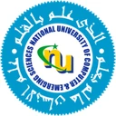
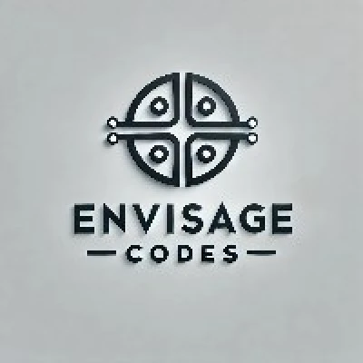
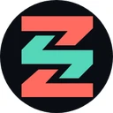
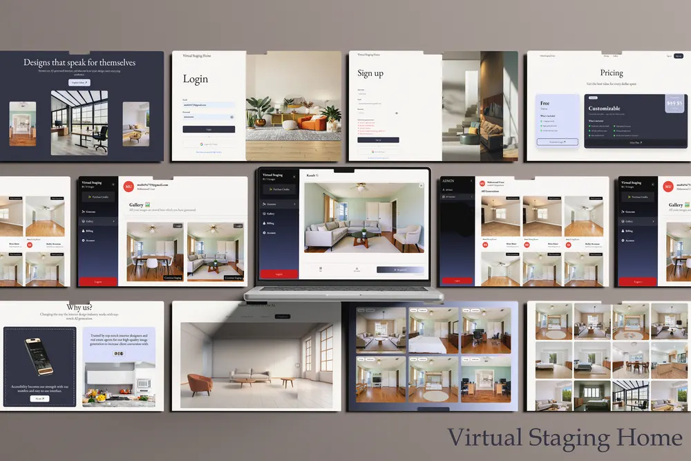

Muhammad Umar
BS Software Engineering · National University of Computer and Emerging Sciences (NUCES), Lahore
I am a Software Engineering graduate of NUCES Lahore.
I work as a software engineer and full-stack developer, building conversational AI systems, mobile apps and web platforms for clients around the world.
Publications
AcceptedUrdu Named Entity Recognition: A Systematic Review of Methods, Resources, and the Comparability of Reported Results
Muhammad Umar, Rameen
Journal of Independent Studies and Research – Computing (JISR-C), E-ISSN 1998-4154. To appear Dec 2026.
A review of the published work on Urdu NER: methods, datasets and resources, how comparable reported results are across studies, and the open research gaps.
Under reviewDetecting Populist Rhetoric in Pakistani Political Discourse: A Low-Resource Annotated Dataset and Benchmark Models
Muhammad Umar, Daniyal Waseem, Abdul Sattar
Journal of Independent Studies and Research – Computing (JISR-C), E-ISSN 1998-4154. Submitted Oct 2026.
A new dataset of tweets from mainstream Pakistani political leaders, annotated for populist rhetoric, with XLM-RoBERTa benchmark models.
Education

Experience

Software Engineer · EnvisageCodes
Mar 2026 – present Remote, part-time- Maintain Showhub, a cross-platform mobile app for barn animal management.
- Work in an agile team with daily scrum meetings.

Full Stack Developer · Zedstack
Jul 2025 – present Remote, part-timeFreelance Full Stack Developer · Upwork
Dec 2024 – Oct 2025 Remote- Delivered web apps, mobile apps and CRM systems for clients around the world.
- Handled UI/UX, backend integration and deployment from start to finish.
A selection of client projects and testimonials is on a separate page.
View freelance workSelected projects
▶ Timeframe
Timeframe: a digital Abraham Lincoln you can talk to in real time
A museum installation built from five real-time modules: presence detection, speech-to-text, LLM reasoning, guardrails and video streaming. I researched and chose the technology for each module and built the pipeline.
YOLO · MediaPipe · AssemblyAI · GPT-4o · Deeprails · D-ID

VirtualHomeStaging: generative AI for automated interior staging
An image-to-image platform that furnishes photos of empty rooms. I compared Flux and Stable Diffusion with Canny control, depth control and masking, then built a ComfyUI workflow on Flux Kontext Dev and deployed it on RunPod serverless GPUs. I also built the Next.js frontend from the Figma designs.
Flux Kontext Dev · ControlNet · ComfyUI · RunPod · Docker · Next.js
▶ NOK
NOK: an IoT door that opens on facial recognition
A camera detects the person at the door and checks them against a gallery of authorised faces. Below a similarity threshold, the owner gets a push notification with a photo and chooses whether to open the door. A Flutter app manages the authorised faces, and an Arduino web server drives a miniature door.
Python · InsightFace · Flutter · Arduino
Skills
- Languages: Python, JavaScript / TypeScript, C++, Java
- ML & AI: Hugging Face Transformers (XLM-RoBERTa), YOLO, MediaPipe, InsightFace, Stable Diffusion, Flux, ComfyUI
- Web & mobile: React, Next.js, Node.js, Spring Boot, React Native, Flutter
- Data & infrastructure: MySQL, MongoDB, SQL Server, Firebase, Docker, RunPod, AWS, Git
Languages
French · DELF A1 preparation
Sep 2026 – present National University of Modern Languages (NUML), LahoreChinese · HSK 1 course
Mar 2026 – Jun 2026 Confucius Institute, University of the Punjab, Lahore · 4-month courseI am also learning Spanish on my own.